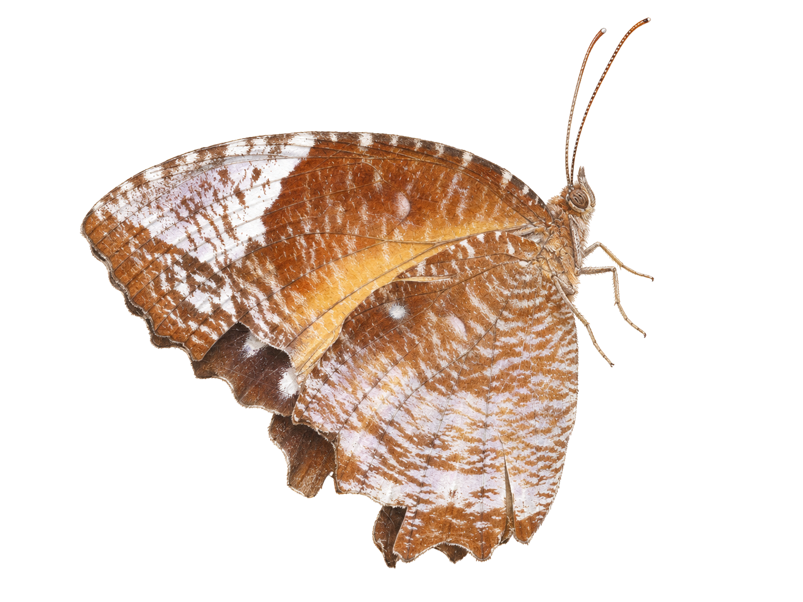

ジャノメチョウ類 · 144 / 165
ルリモンジャノメ
Elymnias hypermnestra

特徴・見分け方
暗い翅表に青紫の光沢があり、翅を閉じると褐色の波模様が見える。マダラチョウ類に似た印象を与える。
雌雄の違い
雌は翅表の外縁近くの青白い斑紋が発達しやすい。裏面だけでは判別しにくい。
大きさ
開張60～68mm（左右に翅を広げた幅）。
沖縄の島別記録
石垣島、西表島、竹富島、小浜島、黒島、鳩間島、波照間島、与那国島などで記録。
生息環境
低地の林縁、林道、公園など。ヤシ類のある環境と関係が深い。
生態・識別上の補足
2021年以降に西表島などで繰り返す発生が紹介されている。古い「ごく少数の迷蝶」という説明だけでは近年の状況を表せない。
幼虫・食草
ビロウ、クロツグ、ヤエヤマヤシなどヤシ類。資料には海外の食草情報も含まれる。
参照元・参考資料
- 日本の蝶：形態・雌雄差
資料内の参照日: 2026-11-10 - 沖縄蝶類生態図鑑：ルリモンジャノメ
資料内の参照日: 2026-11-10 - Hirari：ルリモンジャノメ（2026年更新）
資料内の参照日: 2026-11-10 - 蝶のアルバム：ルリモンジャノメ
資料内の参照日: 2026-11-10
掲載内容は提供データ（2026年11月10日更新）に基づきます。記録島は現在の定着や観察の容易さを保証しません。イラストは参考表現で、同定には実物の形態と参照資料を併せて確認してください。